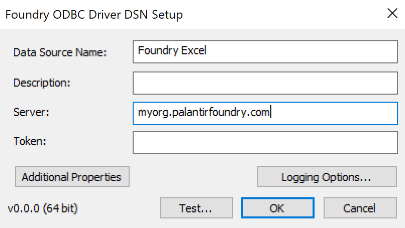
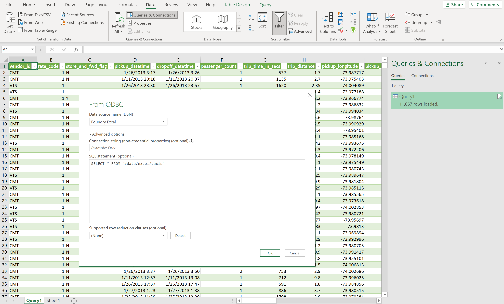

Excel
This guide will teach you how import a dataset into Excel using the Foundry ODBC driver.
Configure a Foundry Connection
- Open the Windows ODBC Administrator App (search for "odbc" in the Windows search bar and open the 32 or 64 bit version matching your Excel version).
- Create a new User DSN, choosing the FoundrySqlDriver driver. Give it a meaningful name, such as
Foundry Excel.
- For the Server, enter your Foundry URL (example:
myorganization.palantirfoundry.com).
- Optional: If you are using OAuth to authenticate, set the OAuth properties.
- Optional: You can save an authentication token here, but we recommend entering it later in Excel where you will be prompted when importing data.
- Click OK to save the DSN.

Import data via SQL
- From Excel, open the Data tab and click on Get data in the ribbon. Select From Other Sources -> From ODBC.
- Choose the DSN you configured in the previous step.
- Under "Advanced Options", enter a SQL query to import data.
* If you want to import the dataset
/YourProject/yourdataset, you would enter SELECT * FROM "/YourProject/yourdataset".
* If you are familiar with SQL, you can enter more advanced queries such as filters and aggregates here.
- Click OK.
- If this is your first time importing data, you will be prompted for credentials.
* If using OAuth, select the "Default or Custom" credential type, leave the field blank and click "Connect"
* Otherwise, you will need an authentication token. Choose "Database", and enter your username. In the "password" field, enter your token, not your Foundry password.
- Click Connect.

Import data via the table browser
By default, if you follow the steps above but do not enter a SQL query, the table browser will display an empty state. This can be resolved by restricting the connection to a single project by adding the catalog property in your DSN and setting it to a full project path, such as MyOrg/MyProject. You can do this by clicking on Additional Properties on the Driver DSN Setup window, and then clicking on Add. The table browser should then display correctly, although you will be limited to browsing a single project per DSN.
Import data into Microsoft Access
The same Foundry Connector for Excel can also be used to import data into Access databases.
- From Access, open the External Data tab and click on New Data Source in the ribbon. Select From Other Sources -> ODBC Database.
- Choose whether you want to Import the source data or Link to the source data.
- Under the Machine Data Source tab, select the DSN you configured in the first step of this guide.
* You will need to have saved your authentication token in the Driver DSN Setup window.
* You will need to have set the
catalog property as described in the previous step.
* Your project path must conform to Access table name restrictions â.
- Select your table(s) from the table browser and click OK.